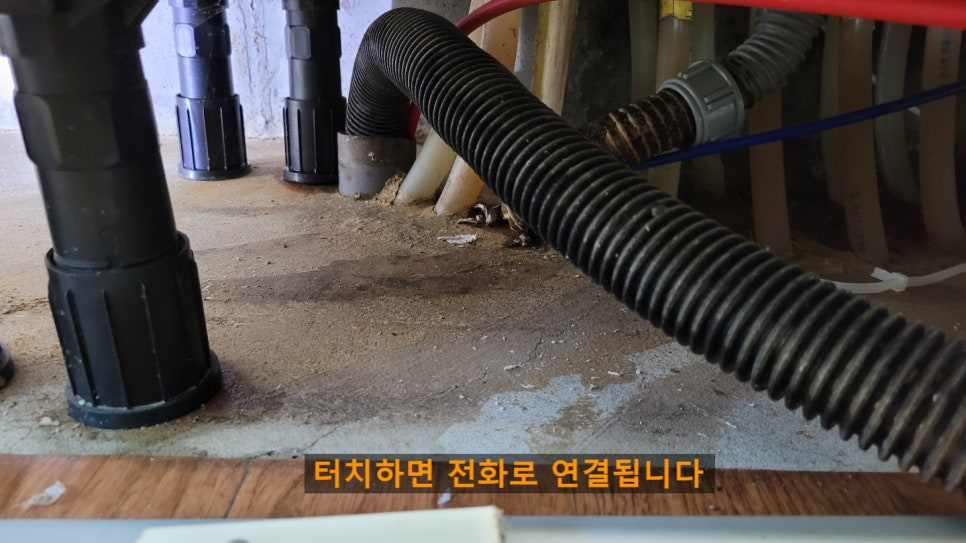
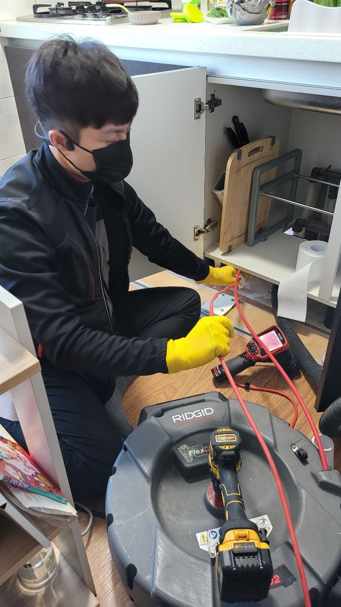
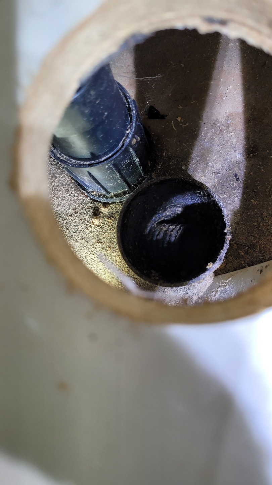

🏠 시흥 거모동 배수구막힘 군자동 하수배관 뚫는곳 설비업체
시흥 싱크대막힘 전문 시공 후기

📋 작업 개요
- 위치: 시흥
- 서비스 유형: 싱크대막힘, 하수구막힘, 배관막힘, 역류해결, 뚫는업체, 고압세척
- 작업 일시: 2024. 3. 13. 18:13
- 업체명: 하수구수사대 (010-5615-2118)
🔍 문제 상황
안녕하세요. 하수구수사대입니다.
이번에 말씀드릴 현장은 시흥시하수구막힘 배곧동 목감동 하수구역류해결을 위해서 달려간 현장이었는데요.
고객님께서 공장과 집으로 동시에 사용을 하고 계시는 곳으로 어느날 주방을 이용하시다가 갑자기 싱크대의 물이 잘 내려가지 않게 되어서 급하게 다른 업체를 불러서 해결해보려고 하셨다고 합니다.
하지만 며칠 지나지 않아서 또다시 막힘이 발생하게 되면서 하수구 뚫음 전문 업체를 찾다가 저희 하수구수사대로 연락을 주신 곳이었습니다. 시흥시하수구막힘 배곧동 목감동 하수구역류해결 현장의 후기를 지금부터 자세하게 알려드리도록 하겠습니다.

🔎 원인 분석
💡 전문가 진단: 이번에 말씀드릴 현장은 시흥시하수구막힘 배곧동 목감동 하수구역류해결을 위해서 달려간 현장이었는데요.
저희 하수구수사대에서는 현장에 도착을 하면 가장 먼저
배관 막힘의 원인을 찾기 위해서 배관 내시경 작업을 하게 됩니다.
하지만 고객님께서 다른 업체에서 진행을 했을 때는 내시경 작업을 하지 않아서 정확한 원인을 알지 못한 채로 작업을 끝냈다고 합니다. 그러다 보니 다시 막히게 되는 일이 발생하게 되었는데요. 내시경 장비가 제대로 갖추어져 있지 않아서 원인을 제대로 파악하지 못한 채로 작업을 했기 때문이라고 생각합니다.
시흥시하수구막힘 배곧동 목감동 하수구역류해결 본격적인 작업을 진행하기 위해서 전체적으로 내부를 살펴보았는데요. 하수구가 막히면서 바닥에는 역류까지 발생을 하고 있는 상황이었습니다.

🔧 작업 과정
하수구 막힘으로 인해서 배관에 물이 고여있게 되면
이로 인해서 악취도 심하게 날 수 있고 오염된 물이 역류를 해서 내부로 흘러나오게 되면 각종 세균들로 인해서 가족들의 건강을 해칠 수 있게 되는 것입니다. 그렇기 때문에 빠른 조치가 필요한 것이라고 할 수 있습니다.
평소에 자주 사용하지 않았는데도 하수구 막힘으로 인해서 배관에 물이 흐르지 않게 되다 보니 답답한 상황이었는데요 배관이 겉으로 보기에는 별다른 문제가 없어 보이기도 하지만 메인 배관을 찾아서 정확한 원인을 파악하는 것이 우선이었습니다. 내시경을 통해서 내부를 보았더니 매우 큰 이물질 덩어리들이 자리 잡고 있는 것이 한눈에 보였습니다.
메인 배관의 경우는 공장과 집안 전체적으로 모두 연결이 되어 있는 통로였습니다.
그렇기 때문에 공장에 배관과 집안의 싱크대가 모두 막히게 된 것이었습니다. 메인 배관의 경우에는 여러 갈래의 물이 모여서 흐르는 통로이기 때문에 이물질들과 기름 덩어리들이 더욱 쉽게 쌓일 수 있습니다.
내시경으로 확인해 본 하수구 내부에 있는 기름 덩어리들은 아주 단단한 형태로 오랜 기간 동안 꾸준히 쌓여온 것이었는데요. 단단한 덩어리와 고체 덩어리들이 막혀 있다 보니 당연히 하수구 막힘이 생길 수밖에 없는 상황이었습니다. 이렇게 생긴 덩어리들만 깔끔하게 제거를 하게 되면 하수구 배관에 물을 사용하는 것은 문제가 없을 것입니다.
이번에 작업해 드린 공간의 경우는 통로가 넓은 메인 배관으로 되어있기 때문에


✅ 작업 완료
큰 이물질 덩어리들을 제거하기 위해서 고압세척 작업을 해야 하였습니다. 고압세척작업은 배관 내의 이물질들을 모두 제거를 하고 악취와 다른 기름때들도 모두 제거할 수 있기 때문에 아주 유용한 장비라고 할 수 있습니다.
배관 내시경을 통해서 내부를 보면서 고압세척 작업을 시작하였는데요. 강한 수압으로 단단한 내부의 이물질들을 모두 부수고 흘려보내는 작업을 하였습니다. 반복적으로 세척작업을 하게 되니 물이 점점 흐르는 것을 확인하였습니다. 배관 내의 이물질들이 모두 제거가 되는 것을 확인하고 작업을 마무리하였습니다.




⚠️ 주방 싱크대 배관 막힘 예방 수칙
- ✅ 기름기가 묻은 식기나 프라이팬은 설거지 전 키친타올로 반드시 기름때를 닦아내세요.
- ✅ 주기적으로 싱크대 개수대에 뜨거운 물을 가득 받아 한 번에 내려 배관 내부 기름을 씻어내세요.
- ✅ 배수구 거름망을 미세한 필터로 사용하시고 음식물 찌꺼기가 틈으로 새어 들지 않게 관리하세요.
- ✅ 베이킹소다와 식초를 뜨거운 물과 함께 일주일에 한 번씩 부어주면 배관 살균과 막힘 예방에 좋습니다.
💡 핵심 정리
- 확실한 장비 작업(내시경 점검 및 샤프트 스케일링)으로 원인을 뿌리 뽑습니다.
- 작업 후 1년 이내에 동일한 부위 재발 시 100% 무상 A/S 서비스를 보장합니다.
- 서울 · 경기 · 인천 전 지역에 24시간 언제든 긴급 출동할 수 있도록 항시 대기 중입니다.
❓ 자주 묻는 질문 (FAQ)
🚨 시흥 싱크대막힘 문제로 고민이신가요?
정확한 원인 진단과 확실한 시공으로 재발 없는 해결을 약속드립니다.
24시간 긴급 출동 | 서울 · 경기 · 인천 전지역 | 1년 내 재발 시 무상 A/S